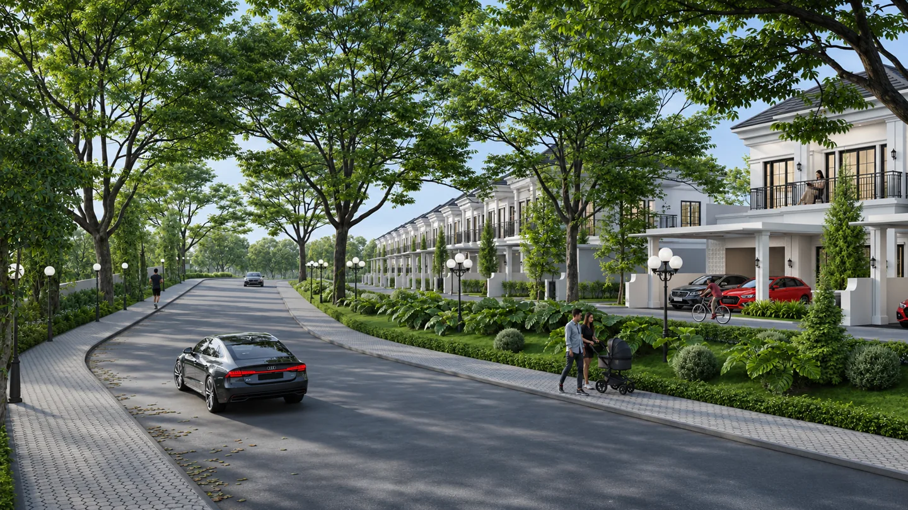

Hidden Sanctuary
Ada tenang
di perjalanan pulang.
Dari gerbang, pepohonan menaungi jalan di antara deretan rumah. Kawasan ini mempertemukan suasana yang lebih teduh dengan keseharian Anda di Manado.

Hidden Sanctuary
Dari gerbang, pepohonan menaungi jalan di antara deretan rumah. Kawasan ini mempertemukan suasana yang lebih teduh dengan keseharian Anda di Manado.